Wewurukannala Vihara〜地獄編〜/Dikwella
マータラを後にして次なる大仏に向かう。
向かった先はマータラの東。
先ほどのWeherehenaTempleの大仏さんと並びスリランカ最南端最強大仏ツートップを形成している。
40メートル級の高い身体能力が特徴のスリランカ屈指のストライカーである。
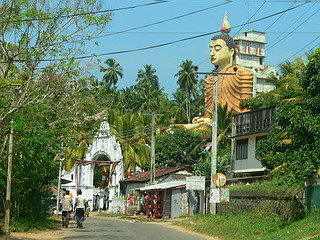
大仏さんの遠景。
背もたれのように建物がくっついている。
この辺、愛知県の布袋大仏を彷彿とさせるスタイルだ。
入口では何やら物々しい雰囲気が。
荷物全開けの凄く厳しいボディーチェックを実施していたのだ。
何でもこの日、スリランカの首相がこの寺に来る予定だとかで入口には何人もの軍人が小銃を携行してうろうろしていた。
今まで北部に限られていたテロがここ南部でも起こる御時世ゆえ致し方あるまい…っと、こらっ！デジカメのカード逆に挿すなっ！レンズを手で触るなあぁぁぁぁ！
手帳や本も全部チェック。みかんでも持ってたら皮まで剥かれそうな勢い。よかった〜週刊ポストとか持ってなくて…
改めてこの国の緊迫した状況を思い知らされた。やだね戦争は。
…てな訳で散々な目にあいながらやっと境内に入る事が出来た。
境内でも軍人がうろうろしていて、何だか大変な時に来ちゃったなあ〜。
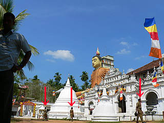 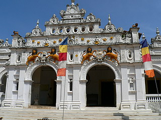
話は変わるが、スリランカのお寺では靴を脱いで裸足になるのが基本だ。しかしこの脱ぎどころが難しい。
門を一歩入ったら脱がなければならないところもあるし、建物の中だけ靴を脱ぐところもある。
暑いお国柄ゆえコンクリート舗装だったりすると足の裏がメチャメチャ熱かったりするので出来るだけ裸足になりたくないのが正直なところだ。
従って周りの人の様子を見て靴脱ぎ最終ラインを見極めるのだが、これがお寺によってマチマチ。
しかも熱心な参拝者はもう、境内に入る前から素足になったりして、こういった熱心な方を見習うと、状況としては浅草の仲見世通りを裸足で歩くようなやり過ぎ感満点な状態に陥ってしまうので判断が難しいのだ。
ここの寺の場合、たまたま周りに他の参拝客がいなかったのでまあ、あの辺だろう、と当たりをつけて歩いているといつの間にか現れたチビッコに「ココは靴脱ぎな」と教えられてしまいました。
うっ。靴脱ぎ最終ラインをオーバーしてしまったようだ。
軍人さん達は靴を履いてるのに…そっか軍人さんはお寺の中でも靴脱がなくてもいいのか…軍人だから…
そんなこんなで靴を脱ぎ、大仏さんに接近を計る。
しかし大仏さんの手前に気になる建物が。
中に入って見ると…
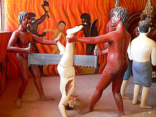 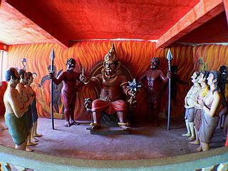
いきなり立体地獄がお出迎え！きょえ〜
規模こそ大きくないものの真っ赤に彩られた室内（よく見ると全部ファイヤーなんすけど）には地獄の光景が等身大の人形たちによって再現されている。
入って最初の光景が逆さ股裂き。しかも胸肉はそぎ落とし。
あまりにも逆アグレッシブな展開にはあえて何もいうまい。当方はウェルカムですぞ！
続いて閻魔サマなのだろうか凶悪な武器を手に地獄の行き先を手配しております。
さらにその先は串刺し、鍋煮込み、煮え湯飲み放題と黄金のフルコースが続く。
壁を見てみれば犬責め股裂きの光景が。
そしてタイの地獄でもお馴染みのトゲトゲ木登り大会の様子がここでも描かれてました。
このトゲトゲ木登り大会、タイの地獄のオリジナルアトラクションかと思っていたらスリランカにもあったんですねえ。
ただ、どうもタイっぽいんだよなあ〜。もしかしたらタイ系の人が寄贈したのかもしれない。
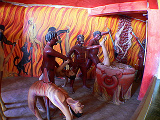 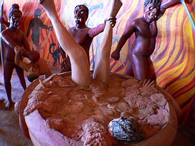
そういえば帰国後何気なく日本の地獄絵の本を眺めていたら、日本にもトゲトゲ木登りがありました。和風っぽく松の木だったけど。
すっかり精神的満腹感に浸りながら先へ進む。
うっ！また大仏直通のトンネルか？
…と思ったら突き当たりで行き止まりになってました。
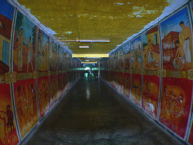
イラストは上下二段組でご覧の通り上は劇画、下はポンチ絵といった構成になっている。
上と下の絵は関連性があるようで、「生前こんなことをすると死後こんなことになりますよ〜」ということらしい（隣にいたおじさん談）。
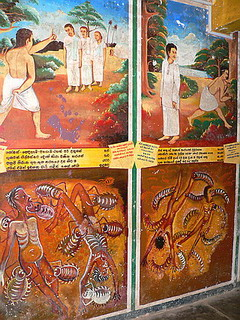 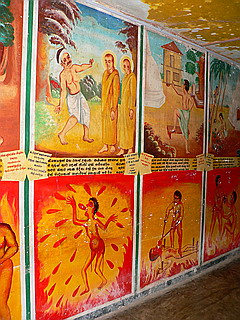
それにしてもこのイラストのギャップったら。
上は大人で下は子供が描いたのだろうか。それとも上はプロ下はアマチュア？
下の段のイラストが時としてどうしようもなく投げやりなのがたまらなくイイ。
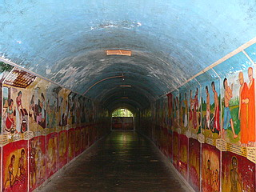
こんな感じで突き当たったらそこで折りかえす。
このあたりで精神的膨満感で倒れそう…
歩いているのにどこにも出られず入ったところに戻るだけ、という生産性のなさが地獄の責め苦っぽかったです。
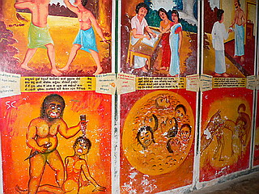 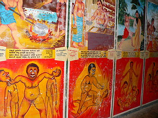
そして再び地獄回廊にお付き合い。
出口には仏サマにたてついた反逆者共の成れの姿が。
後ろのイラストを参考に…
仏サマに石を落とそうとした者→ドーン！
仏サマに中指を立てた者→ドーン！
仏サマを馬鹿にした婦人→ドーン！
仏サマのストーカー→ドーン！
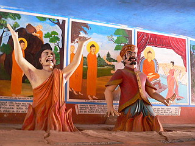 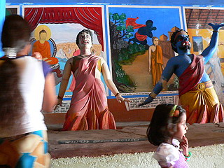
みんな揃って地獄落ち。
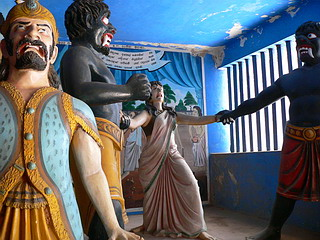
こちらの方も地獄落ち。
さあ、皆さんで行きますよお！せえ〜のぉ…
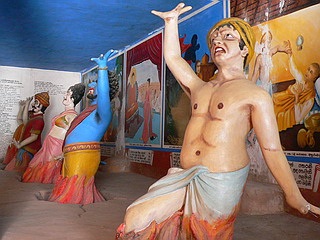ドーン！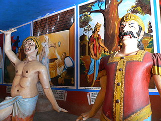
…御唱和ありがとうございました。
目も口もへの字になっちゃって大変ですね。
肝心な大仏に辿りつく前に疲れちゃったので、休憩入れます。